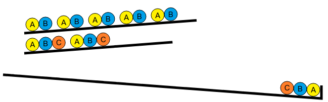
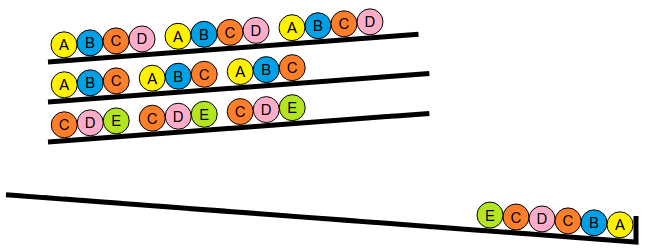

Pärlmönster
Klicka på knapparna för att låta pärlorna falla en och en tills de bildar det visade mönstret.
Klicka på knapparna för att låta pärlorna falla en och en tills de bildar det visade mönstret.
Man måste börja med att låta en pärla A och en pärla B falla. Om man tar båda från första raden kommer man inte vidare, eftersom det sedan inte finns en pärla C till hands.

Man måste alltså börja med att ta pärla A och pärla B från andra raden. Då kan man fortsätta med en pärla C som också finns på andra raden.
Sedan, för att avsluta den första gruppen av fem pärlor, kan man ta en pärla A och en pärla B från första raden. Eftersom kvarvarande kulor ligger likadant som från början kan man upprepa samma tryckningar två gånger till, tills man har de tre 5-grupperna.

En lösning är alltså att klicka på knapparna 2, 2, 2, 1, 1 och att upprepa detta 3 gånger totalt.
Andra lösningar kan skapas genom att byta plats på 1, 1 och 2, 2 när det går, t.ex. så här: 2, 2, 2, 2, 2, 1, 1, 2, 2, 2, 1, 1, 2, 1, 1.
Målet består av tre identiska grupper, var och en bildad av samma sekvens av sex pärlor, innehållande ett A, ett B, två C, ett D, och ett E. Man kan finna dessa sex kulor genom att ta de tre första från rad 2 och de tre första från rad 3.
Man måste dock låta pärlorna falla i rätt ordning för att inte köra fast. Efter A och B måste man låta C från rad 3 falla, för att frigöra ett D som man sedan behöver.

Sedan, för att fullborda den första gruppen av sex pärlor, kan man ta pärlorna D, C och E från raderna 3, 2 och 3. Nu ligger kvarvarande kulor i samma mönster som från början, så att man kan upprepa samma knapptryckningar två gånger till.
En lösning är alltså att klicka på knapparna 2, 2, 3, 3, 2, 3, och att upprepa detta tre gånger totalt.
Det finns också en andra lösning: 1, 1, 3, 3, 1, 3, 2, 2, 3, 3, 2, 3, 2, 2, 3, 3, 2, 3.
Målet består av två identiska grupper, var och en bestående av samma sekvens av sju pärlor A, följt av två pärlor B och tre pärlor C.
För att få en grupp med tre pärlor C måste man frigöra dem från tre olika rader. Detta får inte heller frigöra mer än två pärlor B, vilket innebär att man är tvungen att använda en rad som inte innehåller något B. Bara rad 5 stämmer in på detta.
För att bestämma vilka två andra rader man ska använda, måste man se hur man får ihop sju pärlor A. Eftersom rad 5 ger oss tre pärlor A, återstår fyra som ska komma från de två andra raderna. Det finns bara ett sätt att göra detta, nämligen att använda raderna 1 och 3.
Lösningen är alltså att börja med alla pärlorna A i början av rad 1, 3 och 5.

Sedan tar man pärlorna B på rad 1 och rad 3.

och till sist pärlorna C från rad 1, 3, och 5. Nu ligger kvarvarande kulor i samma mönster som från början, så man kan upprepa samma knapptryckningar en gång till.

Lösningen består alltså i att klicka på knapparna i ordning : 1, 1, 3, 3, 5, 5, 5, 1, 3, 1, 3, 5, upprepat 2 gånger.